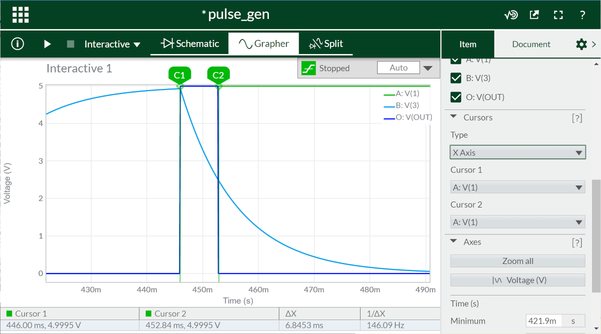

การต่อวงจรดิจิทัลพื้นฐานเพื่อสร้างสัญญาณพัลส์เมื่อกดปุ่มแล้วปล่อย#
Keywords: Logic Gates, NAND2, NI MultiSim Live, EasyEDA / LTspice, AUTODESK Tinkercad, Single Shot Pulse Generation Circuit
▷ วงจรลอจิกเกตสำหรับสร้างสัญญาณพัลส์#
ถ้าต้องการสร้างวงจรอิเล็กทรอนิกส์ โดยใช้ลอจิกเกตพื้นฐาน (Basic Logic Gates) เป็นองค์ประกอบสำคัญของวงจร และสามารถสร้างสัญญาณพัลส์ (Pulse) ที่มีความกว้างช่วง High ไม่มากนัก (ในระดับมิลลิวินาที) และเป็นแบบ One-Shot เมื่อกดปุ่มแล้วปล่อยหนึ่งครั้ง จะมีแนวทางอย่างไร ? ลองมาดูแผนผังของวงจรตัวอย่าง
รูป: แผนผังวงจรตัวอย่าง
วงจรตามรูปแผนผังวงจรต่อไปนี้ (วาดด้วยซอฟต์แวร์ NI MultiSim Live) มีรายละเอียดดังนี้
- ในวงจรนี้ มีปุ่มกดทำหน้าที่สร้างสัญญาณ Trigger เพื่อทำให้เกิดการสร้างสัญญาณพัลส์หลังจากกดปุ่มแต่ละครั้ง
- วงจรนี้ใช้แรงดันไฟเลี้ยงคงที่ +5V จากแหล่งจ่าย DC (ใช้ชื่ออ้างอิงเป็น
VDCในแผนผังวงจร) - มีวงจรปุ่มกด Push Button หรือ On/Off Switch
ในวงจรคือ
S1เป็นสวิตช์แบบ SPST (Single-Pole-Single-Throw) และมีตัวต้านทาน 10kΩ ทำหน้าที่ Pull-up ทำให้จุดAเชื่อมต่อด้วยตัวต้านทานนี้ไปยัง 5V การต่อวงจรสวิตช์หรือปุ่มกดในลักษณะนี้ทำงานแบบ Active-Low - เมื่อยังไม่กดปุ่ม สวิตช์อยู่ในตำแหน่งเปิด หรือ Open จุด
Aจะได้ระดับแรงดันไฟฟ้าเท่ากับ 5V แต่ถ้ากดปุ่มค้างไว้ช่วงเวลาหนึ่ง สวิตช์เปลี่ยนไปอยู่ในตำแหน่งปิด หรือ Close จะมีกระแสไหลจากแหล่งจ่ายขั้วบวก +5V ผ่านตัวต้านทาน Pull-up และไหลผ่านตัวสวิตช์ไปยัง GND ของวงจร และแรงดันไฟฟ้าที่จุดAเทียบกับ GND จะเป็น 0V แต่ถ้าปล่อยปุ่ม แรงดันไฟฟ้าที่จุดAจะเปลี่ยนระดับไปเป็น +5V - สัญญาณไฟฟ้าจากวงจรปุ่มกดที่จุด
Aนำไปต่อกับอินพุตของลอจิกเกตแบบ NOT หรือ Inverter (U1ในแผนผังวงจร) แล้วไปต่อกับวงจร RC ที่มีค่าตัวต้านทาน 1kΩ และตัวเก็บประจุ 10uF - สัญญาณไฟฟ้าที่จุด
Bจะถูกนำไปใช้เป็นสัญญาณอินพุตขาหนึ่งของลอจิกเกตแบบ AND (U2ในแผนผังวงจร) สัญญาณอินพุตอีกขาหนึ่งได้จากวงจรปุ่มกดที่จุดA - แม้ว่าไม่ได้แสดงไว้ให้เห็นอย่างชัดเจน ลอจิกเกตในวงจรนี้ ใช้แรงดันไฟเลี้ยงคงที่ 5V ในการทำงาน
- ลอจิกเกต NOT จะให้สถานะลอจิกตรงข้ามกันระหว่างอินพุตกับเอาต์พุต เช่น ถ้าอินพุตเป็นลอจิก High หรือมีระดับแรงดันใกล้เคียง +5V ซึ่งเป็นแรงดันไฟเลี้ยง ก็จะได้เอาต์พุตเป็นลอจิก Low และมีแรงดันใกล้เคียง 0V
- ลอจิกเกต AND มี 2 ขาอินพุต (มีเอาต์พุตอ้างอิงโดยใช้ชื่อ
OUTในแผนผังวงจร) ถ้าอินพุตทั้งสองขาเป็นลอจิก High เหมือนกัน ก็จะได้เอาต์พุตเป็น High เช่นกัน แต่ในกรณีอื่น จะได้เอาต์พุตเป็น Low - หากต่อวงจรทดลองจริง และสังเกตจากการวัดสัญญาณด้วยเครื่องออสซิลโลสโคป เห็นว่า มีการกระเด้งของปุ่มกด (Button Bounce)
เกิดขึ้น กล่าวคือ กดปุ่มแล้วปล่อยหนึ่งครั้ง แต่มีการเปลี่ยนแปลงสัญญาณหลายครั้ง
แนะนำให้ใช้ตัวเก็บประจุ เช่น 100nF (0.1uF) ต่อคร่อมที่ขาทั้งสองของตัวสวิตช์
S1และเลือกใช้ลอจิกเกตที่มีอินพุตเป็นแบบ Schmitt-Trigger Input
หากต้องการจำลองการทำงานของวงจรแบบ Interactive ด้วย NI MultiSim Live - Online Circuit Simulator เมื่อได้วาดแผนผังวงจรถูกต้องและครบถ้วนแล้ว จะต้องมีการตั้งค่าก่อนเริ่ม
- ในส่วนที่เป็น Simulation Settings ให้เลือก Maximum time step เป็น Manual time step และมีค่าเท่ากับ 1e-5 sec (หรือ 10 usec) เพื่อกำหนดค่าความละเอียดเชิงเวลาในการจำลองการทำงานของวงจร
- คลิกเลือกที่ลอจิกเกต AND แล้วตั้งค่าให้เป็น Logic Levels > Mode: Simplified
- กำหนดตำแหน่งในวงจรที่ต้องการวัดค่าและแสดงผล เช่น วัดแรงดันไฟฟ้าที่จุดขาอินพุตทั้งสองและขาเอาต์พุตของลอจิกเกต AND เป็นต้น (เลือกใช้ Voltage Probe จากแถบเครื่องมือซ้ายมือ "Analysis and Annotation")
รูป: การตั้งค่าสำหรับลอจิกเกต AND โดยเลือกใช้เป็น Logic Levels: Simplified Model
รูป: การตั้งค่าเพื่อกำหนดระยะเวลาในการจำลองการทำงานแบบ Interactive และความละเอียดเชิงเวลา
เมื่อตั้งค่าแล้ว ให้กดปุ่ม Start Simulation และตัวจับเวลาจะเริ่มทำงาน จะเห็นตัวเลขเวลาในการจำลองการทำงาน (Simulation Time) เพิ่มขึ้นเรื่อย ๆ ในขณะนั้นก่อนหมดเวลา ให้ลองกดปุ่มเพื่อเปลี่ยนสถานะของปุ่มกดในวงจร (State Toggle) หลาย ๆ ครั้ง
รูป: การจำลองการทำงานของวงจรแบบ Interactive ซึ่งสามารถกดคลิกที่ปุ่มกดเปลี่ยนสถานะลอจิกของปุ่มกดได้โดยผู้ใช้
คำถาม: หากกดปุ่มแล้วปล่อยในแต่ละครั้ง สัญญาณเอาต์พุตจากลอจิกเกต AND จะเป็นอย่างไร ?
ผลจากการจำลองการทำงาน จะทำให้เห็นสัญญาณภายในวงจรและสัญญาณเอาต์พุตของวงจร ในลักษณะรูปคลื่นสัญญาณ (Waveforms) คล้ายกับการวัดสัญญาณด้วยอุปกรณ์จริง เช่น ใช้เครื่องวัดออสซิลสโคปแบบดิจิทัล เป็นต้น
รูป: ผลการจำลองการทำงาน แสดงผลด้วยคลื่นสัญญาณ
รูป: การเลือกช่วงเวลาและขยายช่วงเวลาเพื่อตรวจสอบดูค่าลอจิกของสัญญาณในวงจร

รูป: การใช้เคอร์เซอร์ (Cursors) เพื่อวัดความกว้างของพัลส์ (วัดได้ค่าประมาณ 6.84 msec)
จากรูปคลื่นสัญญาณ เมื่อกดปุ่ม สัญญาณ A จะเปลี่ยนจาก High (5V) เป็น Low (0V)
อย่างรวดเร็ว (มีค่า Fall Time น้อยมาก)
ในขณะที่สัญญาณ B จะเปลี่ยนจาก 0V ค่อย ๆ เพิ่มขึ้น จนถึง 5V (ไม่เปลี่ยนแบบทันทีทันใด)
ซึ่งขึ้นอยู่กับค่าของตัวต้านทานและตัวเก็บประจุในวงจร (หรือเรียกว่า RC Time Constant)
เมื่อปล่อยปุ่มกด สัญญาณ A จะเปลี่ยนจาก 0V ไปเป็น 5V
อย่างรวดเร็ว (มีค่า Rise Time น้อยมาก) สัญญาณ B จะเปลี่ยนจาก 5V
ค่อย ๆ ลดลง จนถึง 0V
จากการจำลองการทำงานจะเห็นได้ว่า สัญญาณ A มีความเป็นสัญญาณดิจิทัลมากกว่า B
เนื่องจาก A มีการเปลี่ยนสถานะลอจิกหรือระดับแรงดันไฟฟ้าระหว่าง 0V และ 5V
ได้อย่างรวดเร็ว แต่ในขณะที่ B มีการเปลี่ยนแปลงช้ากว่า (มีค่า Transition Time มากกว่า)
และในทางทฤษฎี สัญญาณ B จึงไม่เหมาะกับการใช้งานในวงจรดิจิทัล
อย่างไรก็ตาม ถ้านำทั้งสองสัญญาณ A และ B ไปใช้เป็นอินพุตของลอจิกเกต AND
ก็จะได้สัญญาณเอาต์พุตเป็นสัญญาณดิจิทัล ถ้าสัญญาณอินพุตทั้งสองอยู่ในระดับใกล้เคียง
5V จะได้เอาต์พุตเป็นลอจิก High แต่ถ้าสัญญาณ A ยังเป็น High
แต่สัญญาณ B เริ่มลดระดับลง จนถึงระดับหนึ่ง เอาต์พุตของลอจิกเกต AND
จะเปลี่ยนจาก High เป็น Low ตามที่ปรากฏในผลการจำลองการทำงานของวงจร
▷ การจำลองการทำงานของวงจรด้วย Tinkercad และ EasyEDA#
ถัดไปเป็นตัวอย่างการวาดแผนผังวงจรและจำลองการทำงานด้วยซอฟต์แวร์ EasyEDA แต่มีการใช้ลอจิกเกต NAND ที่มีอินพุต 2 ขา แทนที่ลอจิกเกต NOT และ AND ในวงจรตัวอย่างแรก
ลอจิกเกต NAND สามารถนำมาใช้สร้างลอจิกเกตอื่นได้ เช่น
- ให้ลอจิกเกต NOT มีอินพุต
Aและเอาต์พุตOได้ฟังก์ชันเชิงตรรกะคือO = !(A)โดยที่!หมายถึง โอเปอเรเตอร์ NOT (กลับค่าลอจิก) หรือสามารถเขียนฟังก์ชันนี้ได้ใหม่เป็นO = !(A & A)โดย&หมายถึง โอเปอเรเตอร์ AND ดังนั้นจึงใช้ลอจิกเกต NAND ได้เป็นO = NAND2(A,A) - ให้ลอจิกเกต AND มีอินพุต
AกับBและเอาต์พุตOได้ฟังก์ชันเชิงตรรกะคือO = (A & B)หรือเขียนฟังก์ชันนี้ได้เป็นO = !(!(A & B))และใช้ลอจิกเกต NAND 2 ตัว คือX = NAND2(A,B)และO = NAND2(X,X)ตามลำดับ
เพื่อให้ง่ายต่อการจำลองการทำงานในโหมด Transient Simulation เมื่อใช้ EasyEDA ได้ตัดส่วนที่เป็นวงจรปุ่มกดออกไป และแทนที่ด้วยแหล่งจ่ายที่สร้างสัญญาณแบบ PULSE และใช้เป็นสัญญาณ Trigger แทนการกดปุ่ม
รูป: การจำลองการทำงานของวงจรด้วย EasyEDA (ใช้ตัวต้านทาน 1kΩ และ C=10uF) และเลือกใช้โมเดลของไอซี 74HC00 ที่สามารถจำลองการทำงานได้ด้วย SPICE / LTspice Circuit Simulator
รูป: คลื่นสัญญาณอินพุต (บน) และเอาต์พุต (ล่าง) ได้จากการจำลองการทำงานของวงจรด้วย EasyEDA (ความกว้างพัลส์ของสัญญาณเอาต์พุต ได้ประมาณ 6.54 msec)
ถัดไปเป็นตัวอย่างการต่อวงจรเสมือนจริงด้วย AUTODESK Tinkercad และทดลองจริงบนเบรดบอร์ด โดยมีการใช้ไอซี 74HC00N ซึ่งภายในมีลอจิกเกต 2-Input NAND จำนวน 4 ตัว
รูป: ไอซี TI SN74HCT00 (IC Package: PDIP-14) มุมมองแบบ Top View
ตัวอย่างการจำลองการทำงานของวงจรแบบเสมือนจริงด้วย Tinkercad (สามารถจำลองการทำงานได้แบบ Interactive และกดปุ่มได้)
รูป: เมื่อกดปุ่มแล้วปล่อย จะเห็นสัญญาณพัลส์
รูป: เมื่อกดปุ่มแล้วปล่อย จะเห็นสัญญาณพัลส์ที่เกิดจากวงจร RC
ข้อสังเกต: เมื่อใช้ไอซีลอจิก SN74HC00/HCT00 มาต่อวงจร ถ้าใช้ลอจิกเกตภายในไม่ครบทั้ง 4 ตัว ลอจิกเกตที่ไม่ได้ใช้ ให้ต่อขาอินพุตลง GND ทุกขา ไม่ปล่อยขาอินพุตลอยไว้ (Floating Inputs)
▷ ตัวอย่างการต่อวงจรทดลองจริง#
ถัดไปเป็นตัวอย่างการต่อวงจรทดลองบนเบรดบอร์ด
รูป: การต่อวงจรทดลองบนเบรดบอร์ด (ใช้ไอซี 74HCT00N) และวัดสัญญาณด้วยออสซิลโลสโคป (ใช้แรงดันไฟเลี้ยงจาก USB ประมาณ 5V)

รูป: ตัวอย่างคลื่นสัญญาณเมื่อใช้ตัวเก็บประจุ 1uF: ช่อง 1 สัญญาณจากปุ่มกด (จุด A)
และช่อง 2 สัญญาณเอาต์พุต
(ตั้งค่า TIME/DIV = 5msec และ VOLT/DIV = 2V)

รูป: ตัวอย่างคลื่นสัญญาณเมื่อใช้ตัวเก็บประจุ 10uF: ช่อง 1 สัญญาณจากปุ่มกด (จุด A)
และช่อง 2 สัญญาณเอาต์พุต
(ตั้งค่า TIME/DIV = 20msec และ VOLT/DIV = 2V)

รูป: ตัวอย่างคลื่นสัญญาณช่อง 1 และ 2 วัดที่จุด A และ B ในวงจรตัวอย่างตามลำดับ
เมื่อมีการกดปุ่มแล้วปล่อย ช่วงที่สัญญาณจุด A เป็น Low มีระยะเวลาประมาณ 40 msec

รูป: ตัวอย่างคลื่นสัญญาณช่อง 1 และ 2 วัดที่จุด A และ B ในวงจรตัวอย่างตามลำดับ
เมื่อมีการกดปุ่มแล้วปล่อย ช่วงที่สัญญาณจุด A เป็น Low มีระยะเวลาประมาณ 100 msec
▷ โจทย์การทดลองฝึกปฏิบัติ#
คำถามสำหรับการทดลองฝึกปฏิบัติ
1) ออกแบบวงจรและวาดแผนผังวงจร โดยให้ใช้ลอจิกเกต NAND และวางแผนการต่อวงจรบนเบรดบอร์ด โดยใช้ไอซีลอจิกเกต 7400 (Quad 2-input NAND Logic Gate) เพียงหนึ่งตัว เช่น เลือกใช้ไอซี 74HCT00N (TTL) หรือ 74HC00N (CMOS) ซึ่งภายในมีลอจิกเกตแบบ NAND อยู่ 4 ตัว แล้วนำมาใช้สร้างวงจรจริงตามโจทย์ข้อ 1
2) วัดความกว้างของสัญญาณพัลส์จากวงจรจริงเมื่อกดปุ่มแต่ละครั้ง โดยใช้เครื่องออสซิลโลสโคป (เลือกใช้ Trigger Mode ให้เหมาะสม) และให้เลือกค่า R และ C ดังต่อไปนี้ บันทึกภาพคลื่นสัญญาณและเปรียบเทียบกับผลการจำลองการทำงานในแต่ละกรณี
- R=1kΩ, C=1uF
- R=1kΩ, C=10uF
- R=10kΩ, C=1uF
- R=10kΩ, C=10uF
3) ค่า RC Time Constant จากข้อ 2 ส่งผลอย่างไรต่อความกว้างของสัญญาณพัลส์ (ช่วงที่เป็น High) ที่เป็นเอาต์พุตของวงจร ? จงเขียนอธิบาย
4) ระยะเวลาในการกดปุ่มหรือสวิตช์ค้างไว้ มีผลต่อความกว้างของสัญญาณพัลส์ที่เป็นสัญญาณเอาต์พุตของวงจรหรือไม่ ?
5) ถ้ากดปุ่มค้างไว้แล้วยังไม่ปล่อย จะเกิดสัญญาณพัลส์ที่เอาต์พุตของวงจรหรือไม่ ? จงเขียนเหตุผลอธิบายคำตอบ
▷ กล่าวสรุป#
เอกสารนี้นำเสนอตัวอย่างวงจรที่ใช้ลอจิกเกตพื้นฐาน นำมาต่อวงจรเพื่อสร้างสัญญาณพัลส์เมื่อมีการกดปุ่มแล้วปล่อย มีตัวอย่างการใช้งานซอฟต์แวร์ เช่น NI MultiSim Live EasyEDA และ Tinkercad สำหรับการวาดแผนผังวงจรและจำลองการทำงาน รวมถึงการทดลองต่อวงจรจริงและวัดสัญญาณด้วยเครื่องออสซิลโลสโคป
This work is licensed under a Creative Commons Attribution-ShareAlike 4.0 International License.
Created: 2022-10-04 | Last Updated: 2022-10-06